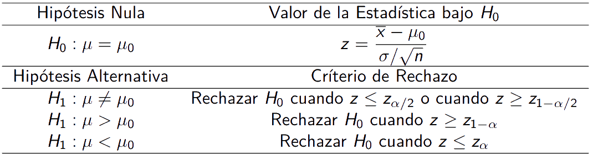
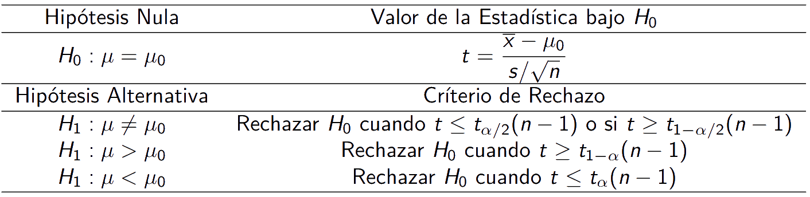
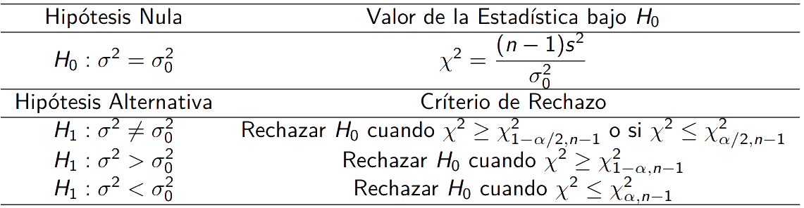
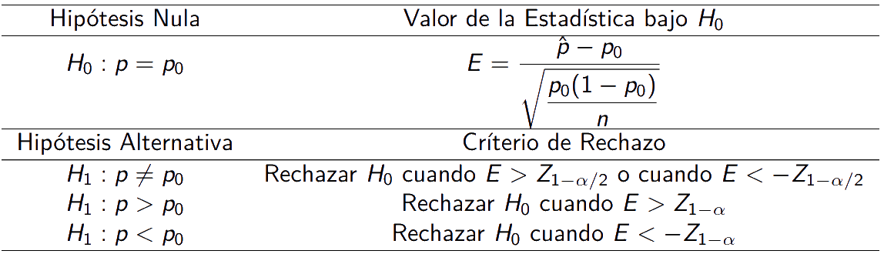

Introducción a inferencia estadística
LFIS 325 - 2022/02
Eloy Alvarado Narváez
Universidad de Valparaíso
27/10/22
Test de hipótesis
Para llegar a tomar decisiones, conviene hacer determinados supuestos o conjeturas acerca de las poblaciones que se estudian. Tales supuestos que pueden ser o no ciertos se llaman hipótesis estadísticas y, en general, lo son sobre las distribuciones de probabilidad de las poblaciones.
En muchos casos se formulan las hipótesis estadísticas con el sólo propósito de rechazarlas o invalidarlas. Cualquier hipótesis que difiera de una hipótesis dada se llama hipótesis alternativa. Denotaremos por \(H_0\) a nuestro supuesto o hipótesis nula, y \(H_1\) a nuestra hipótesis alternativa.
Tipos de error
Al realizar nuestra prueba de hipótesis estamos sujetos al estado real de la naturaleza, es decir, la veracidad de nuestra conjetura (\(H_0\))
| Estado Real | en la naturaleza | ||
|---|---|---|---|
| \(H_0\) es Verdadera | \(H_0\) es Falsa | ||
| Decisión | No se rechaza \(H_0\) | Decisión Correcta | Error Tipo II |
| Se rechaza \(H_0\) | Error Tipo I | Decisión Correcta |
Podemos cometer dos tipos de errores, tipo I y tipo II.
Error tipo I: Se comete al rechazar la hipótesis nula, cuando corresponde aceptarla por ser ésta verdadera. Lo denotamos por \(\alpha\) y es llamado nivel de significación.
Error tipo II: Se comete al no rechazar la hipótesis nula, cuando corresponde rechazarla por ser esta falsa. Lo denotamos por \(\beta\).
El error tipo I es fundamental debido a que es el error que el experimentador controla y pueda manejar.
Función de potencia
Es la probabilidad de rechazar la hipótesis nula dado que la alternativa es correcta. Para los posibles valores de la hipótesis alternativa.
Cuando se toma un punto específico de la hipótesis alternativa, ya no se habla de función potencia, sino de potencia de la prueba. Relación entre la función potencia y el error tipo II.
\[\begin{align*} \pi(\theta)&=1-\beta\\ &= 1-\mathbb{P}(\text{No rechazar }H_0 | H_0 \text{ es Falsa})\\ &=1-( 1-\mathbb{P}(\text{rechazar }H_0 | H_0 \text{ es Falsa}))\\ &=\mathbb{P}(\text{rechazar }H_0 | H_0 \text{ es Falsa})\\ &=\mathbb{P}(\text{rechazar }H_0 | H_1 \text{ es Verdadera}) \end{align*}\]
Ejemplo
Sea \(X\) la duración del tiempo necesario para armar una unidad se distribuye de forma normal con desviación estándar \(\sigma=1.4\) minutos. Se observan los tiempos de armado de 25 unidades seleccionadas aleatoriamente y se escoge la media muestral \(\overline{X}\) como el estadístico de prueba. Se plantea la siguiente hipótesis nula:
\[H_0: \mu = 10\]
y la hipótesis alternativa:
\[H_1: \mu > 10\]
Se está interesado en comparar las siguientes regiones críticas, con un nivel de significancia del \(6\%\)
- Prueba A: Rechazas \(H_0\) si \(\overline{X} > 10.65\)
- Prueba B: Rechazas \(H_0\) si \(\overline{X} > 10.45\)
- Prueba C: Rechazas \(H_0\) si \(\overline{X} > 10.25\)
Ejemplo: continuación
Para determinar la probabilidad del error de tipo I, Asumimos que \(H_0\) es cierta y calculamos:
\[\mathbb{P}\left(\overline{X}>c|\mu =10\right)=\alpha\]
En donde \(c\) es el valor crítico o frontera de la región crítica. Si asumimos \(H_0\) verdadera, entonces \(\overline{X}\sim N\left(10,{1.4^2 \over 25}\right)\). Por lo que:
\[\begin{align*} \alpha&=\mathbb{P}\left(\overline{X} > 10.65 | \mu =10\right)\\ &=\mathbb{P}\left(Z>2.32 | \mu =10\right) = 0.0102 \end{align*}\] De igual manera para los otros casos:
- \(\alpha=0.0537\)
- \(\alpha=0.1867 > 0.06\). Por lo que no la consideramos.
Ejemplo: continuación
Ya que ni la prueba A ni B han sobrepasado el tamaño máximo del error tipo I (nivel de significancia), se determinará cuál es estas dos tiene el tamaño más pequeño para el error de tipo II.
(Error Tipo II \(\Rightarrow H_0\) es falsa.)
\[\beta(\mu)=\mathbb{P}\left(\overline{X} \leq c \Bigg\vert\ \mu > 10\right)\]
Lo cual no es cuantificable en general. Consideramos que el valor real de \(\mu\) es \(10.4\). Entonces para la prueba A y B, respectivamente.
- \(\mathbb{P}\left(\overline{X} \leq 10.65 \Bigg\vert\ \mu = 10.4\right)= \mathbb{P}\left(Z \leq 0.89 \Bigg\vert\ \mu= 10.4\right)=0.8133\)
- \(\mathbb{P}\left(\overline{X} \leq 10.45 \Bigg\vert\ \mu = 10.4\right)= \mathbb{P}\left(Z \leq 0.18 \Bigg\vert\ \mu= 10.4\right)=0.5714\)
Por lo que, si \(\mu = 10.4\), la probabilidad de que la prueba A se equivoque al rechazar la hipótesis nula de que \(\mu=10\) es de \(0.8133\), análogamente para B es de \(0.5714\). Por lo que para este valor particular, la prueba B es mejor que la A.
Tipos de regiones críticas
Si consideramos una hipotesis nula simple, esto es:
\[H_0: \theta = \theta_0\]
En donde \(\theta\) es el parámetro de interés, cuando se muestrea una distribución cuya función de densidad de probabilidad es \(f(x;\theta)\), en donde \(\theta_0\) es el valor propuesto de \(\theta\). Si la hipótesis alternativa es de la forma:
\[H_1: \theta > \theta_0\hspace{20pt}\text{o}\hspace{20pt} H_1: \theta < \theta_0\]
Se dice que \(H_1\) es una hipotesis alternativa unilateral. En caso contrario, si la hipótesis alternativa no proporciona una dirección con respecto al valor propuesto de \(\theta_0\), entonces se dice que \(H_1\) es una hipotesis alternativa bilateral de la forma:
\[H_1: \theta \neq \theta_0\]
Prueba para la media poblacional
Sea \(X_1,X_2,\dots,X_n\) una muestra aleatoria de una distribución normal con media \(\mu\) desconocida. En este caso el interés recae en probar uno de los siguientes conjuntos de hipotesis con respecto a \(\mu\).
\[H_0:\mu = \mu_0 \qquad H_0:\mu= \mu_0 \qquad H_0:\mu = \mu_0 \\H_1:\mu \neq \mu_0 \qquad H_1:\mu > \mu_0 \qquad H_1:\mu < \mu_0\]
Supongamos primero que la varianza poblacional \(\sigma^2\) es conocida. Utilizando la estadística de prueba \(\overline{X}\), bajo \(H_0\) se tiene que \(\overline{X}\sim N\left(\mu_0,{\sigma^2 \over n}\right)\). La región crítica de tamaño \(\alpha\) para la hipótesis bilateral es de la forma:
\[\text{Rechazar }H_0 \text{ si}\begin{cases} \overline{X}\geq \overline{x}_{1-\alpha /2}\\ \overline{X}\leq \overline{x}_{\alpha /2} \end{cases}\]
Prueba para la media poblacional: desarrollo
En donde \(\overline{x}_{1-\alpha /2}\) y, \(\overline{x}_{\alpha /2}\) son los valores cuantiles críticos de \(\overline{X}\) de manera tal que:
\[\mathbb{P}(\overline{X}\geq \overline{x}_{1-\alpha /2})= \alpha /2 \hspace{20pt}\text{y}\hspace{20pt} \mathbb{P}(\overline{X}\geq \overline{x}_{\alpha /2})= \alpha /2\]
Dado que bajo \(H_0, \overline{X}\sim N(\mu_0,{\sigma^2 \over n})\), entonces de forma equivalente:
\[\mathbb{P}\left( Z \geq \underbrace{\dfrac{\overline{x}_{1-\alpha /2}-\mu_0}{\sigma / \sqrt{n}}}_{z_{1-\alpha /2}}\right)=\alpha /2\hspace{20pt}\text{y}\hspace{20pt}\mathbb{P}\left( Z \leq \underbrace{\dfrac{\overline{x}_{\alpha /2}-\mu_0}{\sigma / \sqrt{n}}}_{z_{\alpha /2}}\right)=\alpha /2\]
Por lo que, \(H_0\) debe rechazarse cuando un valor de \(\overline{x}\) de la media muestral \(\overline{X}\) es tal que:
\[\overline{x} \geq \dfrac{\sigma z_{1-\alpha /2}}{\sqrt{n}}+\mu_0\hspace{20pt}\text{o}\hspace{20pt}\overline{x} \leq \dfrac{\sigma z_{\alpha /2}}{\sqrt{n}}+\mu_0\]
Prueba para la media poblacional: regiones de rechazo
De manera equivalente, se rechazará \(H_0\) cuando,
\[z\geq z_{1-\alpha /2}\hspace{20pt}\text{o}\hspace{20pt}z\leq z_{\alpha /2}\]
Donde \(z=\dfrac{\overline{x}-\mu_0}{\sigma / \sqrt{n}}\) es el valor de la correspondiente normal estándar al valor \(\overline{x}\) de \(\overline{X}\).
Para la hipótesis alternativa unilateral, \(H_1: \mu > \mu_0\), la región crítica de tamaño \(\alpha\) es el extremo derecho de la distribución de muestreo de \(\overline{X}\), ésta es de la forma:
\[\text{Rechazar } H_0 \text{ si } \overline{X} \geq \overline{x}_{1-\alpha}\]
De forma similar, para la hipótesis alternativa unilateral \(H_1:\mu < \mu_0\), la región crítica es de la forma:
\[\text{Rechazar } H_0 \text{ si } \overline{X} \leq \overline{x}_{1-\alpha}\]
Tabla resumen pruebas para la media con varianza conocida
Lo anterior puede ser resumido en:
Observaciones
Notar que lo anterior, sólo fue posible debido a que sabíamos \(\sigma^2\). En caso de no conocerlo, si utilizamos la misma estadística de prueba \(\overline{X}\), se tiene que:
\[T=\dfrac{\overline{X}-\mu_0}{S / \sqrt{n}} \sim t(n-1)\]
Por lo que siguiendo el mismo procedimiento que antes, podemos llegar a regiones críticas similares.
Tabla resumen pruebas para la media con varianza desconocida
Lo anterior puede ser resumido en:
Pruebas para la varianza poblacional
Sea \(X_1,\dots,X_n\) una muestra aleatoria de una distribución normal con media \(\mu\) desconocida y varianza \(\sigma^2\). Se considera el siguiente test de hipótesis:
\[H_0:\sigma^2=\sigma_{0}^{2}\]
contra una de las siguientes alternativas:
\[H_1:\sigma^2\neq \sigma_{0}^{2},\hspace{5pt}H_1:\sigma^2> \sigma_{0}^{2},\hspace{5pt}H_1:\sigma^2< \sigma_{0}^{2}\]
donde \(\sigma_{0}^{2}\) es el valor propuesto para \(\sigma^2\). La estadística de interés es la varianza muestral \(S^2\). La hipótesis nula será rechazada si la realización de \(s^2\) calculada a partir de la muestra, es suficientemente diferente, mayor que o menos que \(\sigma_{0}^{2}\), dependiendo de la hipótesis alternativa. Bajo \(H_0\):
\[\dfrac{(n-1)s^2}{\sigma_{0}^{2}}\sim \chi^2(n-1)\]
Tabla resumen pruebas para la varianza
Así, conforme la misma construcción realizada anteriormente, es posible encontrar las criterios de rechazo, en resumen:
Pruebas para la proporción poblacional
Sea \(X_1,\dots,X_n\) una muestra aleatoria de una distribución Bernoulli \(Ber(1,p)\). Consideramos el siguiente test de hipótesis:
\[H_0:p=p_0\]
contra una de las siguientes alternativas:
\[H_1:p\neq p_0,\hspace{5pt}H_1:p> p_0,\hspace{5pt}H_1:p<p_0\]
donde \(p_0\) es el valor propuesto para \(p\). La estadística de interés bajo \(H_0\) es:
\[E=\dfrac{\hat{p}-p_0}{\sqrt{\dfrac{p_0(1-p_0)}{n}}}\sim N(0,1)\]
Para \(n>>50\) y \(\hat{p}=\sum_{i=1}^{n}X_i/n\)
Tabla resumen pruebas para la proporción
Así, conforme la misma construcción realizada anteriormente, es posible enconrtar los criterios de rechazo, en resumen:
Ejercicio test de hipótesis para la media
Los siguientes datos representan los tiempos de armado para 20 unidades seleccionadas aleatoriamente:
9.8, 10.4, 10.6, 9.6, 9.7, 9.9, 10.9, 11.1, 9,6, 10.2, 10.3, 9.6, 9.9, 11,2, 10.6, 9.8, 10.5, 10.1, 10.5, 9.7.
Supóngase que el tiempo necesario para armar una unidad es una variable aleatoria normal con una desviación estándar de 0.6 minutos. Con base en esta muestra, ¿existe alguna razón para creer, a un nivel de significancia del 0.05, que el tiempo de armado promedio es mayor de 10 minutos?
Resolución Ejercicio Test de hipótesis para la media
En este caso sabemos la desviación estándar real: \(\sigma=0.6\) y que el test de hipótesis está dado por:
\[H_0: \mu \leq 10 \hspace{15pt} H_1: \mu > 10\]
Así, nuestro Estadístico de prueba estará dado por:
\[z=\dfrac{\overline{x}-\mu_0}{\sigma /\sqrt{n}}\]
en donde \(\overline{x}=9.6\) por lo que \(z=\dfrac{9.6-10}{0.6/\sqrt{20}}=-2.981424\) Así, rechazaremos \(H_0\) si \(z \geq z_{1-\alpha}\) en donde \(\alpha=0.05 \Rightarrow z_{0.95}=1.65\). Por lo que, debido a que \(-2.981424 < 1.65\) no se rechaza la hipótesis nula.
Ejercicio Test de hipótesis para la proporción
En el año \(2016\), el \(16\%\) de las embarazadas fueron adolecentes menores de \(20\) años. El Ministerio de Salud desea saber si esa cifra ha aumentado, para ello se considera una muestra de \(704\) partos ocurridos en el Hospital Metropolitano, donde \(132\) de ellos corresponden a embarazadas que son adolecentes menores de \(20\) años. Con la información anterior. ¿Es posible aseverar que el porcentaje ha aumentado?
Resolución Ejercicio Test de hipótesis para la proporción
En este caso sabemos que el test de hipótesis a realizar es:
\[H_0: p\leq 0.16 \hspace{15pt} H_1: p > 0.16\]
Adicionalmente, por enunciado sabemos que \(\hat{p}=\dfrac{132}{704}=0.1875\). Así, nuestro estadístico de prueba estará dado por:
\[E=\dfrac{0.1875-0.16}{\sqrt{\dfrac{0.16(1-0.16)}{704}}}=144.0476\]
Y rechazaremos \(H_0\) si \(E> Z_{1-0.05}=Z_{0.95}=1.65\), por lo que como \(144.0476 > 1.65\) rechazamos \(H_0\) y en consecuencia podemos aseverar que el porcentaje ha aumentado.
¿Qué veremos la próxima semana?
- Regresión lineal simple
¿Qué deben preparar para la próxima semana?
- Desarrollar guía de ejercicios
- Leer capítulo 12, Probability and Statistics for Engineering and the Sciences, 9th Edition.
LFIS 325 - Semana 9